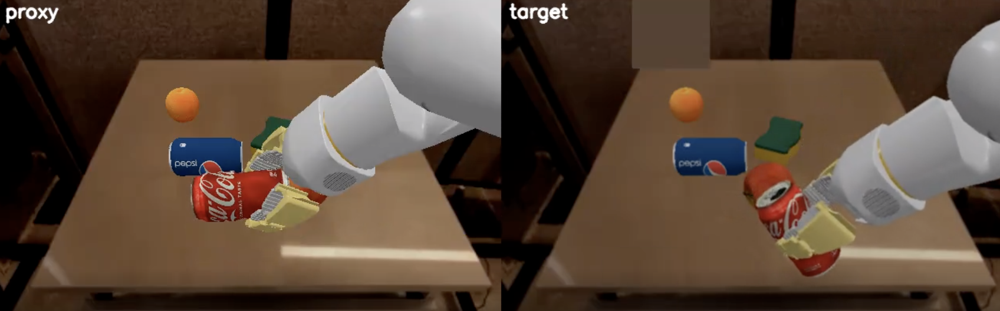
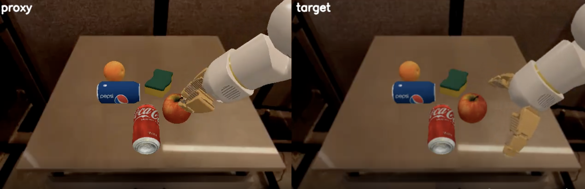
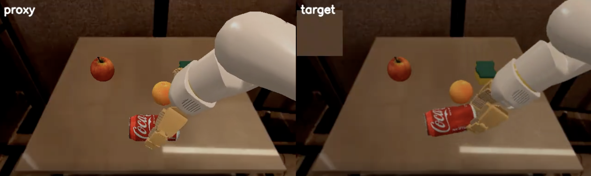
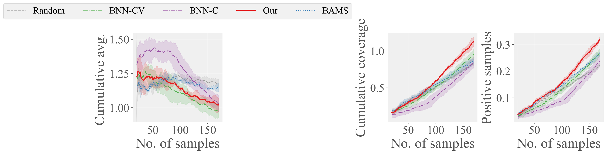
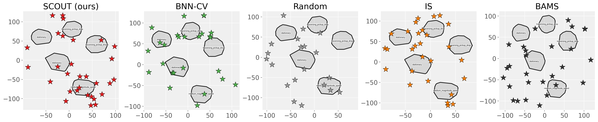

1. Shortlist
Cluster the labels already collected. Designs that sit outside that support, or on the boundary between clusters, get a high mutual-information score. Gold marks are that shortlist.
SCOUT spends a small target-system budget where a cheap proxy is informative, and uses support-aware mutual information so those labels cover more than one failure mode.
Virtual KITTI scores
KITTI scores being learned
Virtual KITTI
KITTI
Loading paired KITTI frames…
Hover a point to see that frame. Each step spends one real KITTI label.
Cluster the labels already collected. Designs that sit outside that support, or on the boundary between clusters, get a high mutual-information score. Gold marks are that shortlist.
On the shortlist only, a local control variate estimates the target score from the surrogate and the free simulator. The proxy is a covariate, not the answer.
The chosen frame is labeled with the real KITTI missed-car score. The picture pair updates so you can see the clone and the real road scene that score came from.
Quadruped velocity-tracking on a Unitree Go2. The commands in the video are ones the method predicted as failures or as a non-failure.
The supplementary file docs/assets/video.mp4 is not in this checkout yet.
Same grasp, two visual simulators. The gap case is a success in the proxy and a miss on the target.



Same target budget for every method. Curves are mean ± std from the paper runs in the research repository, including nuPlan.

| Threshold γ | Random | BNN-C | BAMS | BNN-CV | Ours |
|---|---|---|---|---|---|
| 0.30 | 0.23 ± 0.01 | 0.25 ± 0.01 | 0.28 ± 0.01 | 0.27 ± 0.01 | 0.33 ± 0.01 |
| 0.20 | 0.22 ± 0.00 | 0.24 ± 0.02 | 0.27 ± 0.01 | 0.26 ± 0.01 | 0.32 ± 0.01 |
| 0.05 | 0.21 ± 0.01 | 0.21 ± 0.02 | 0.25 ± 0.01 | 0.22 ± 0.02 | 0.29 ± 0.01 |
